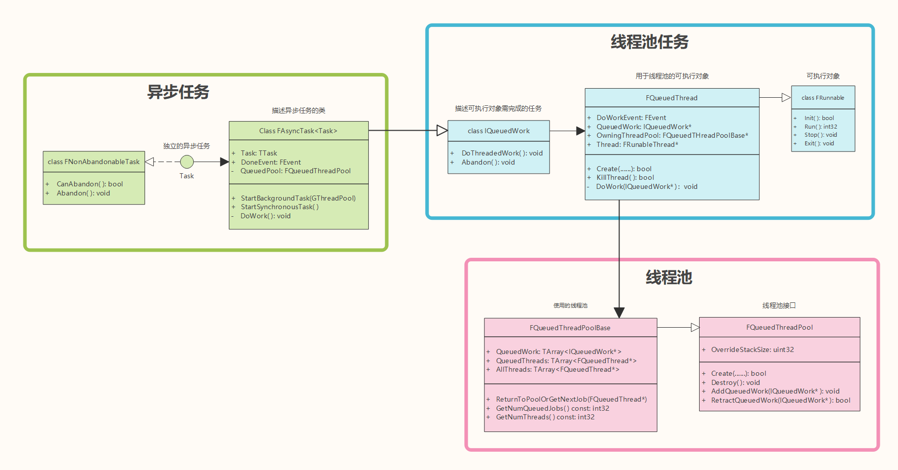
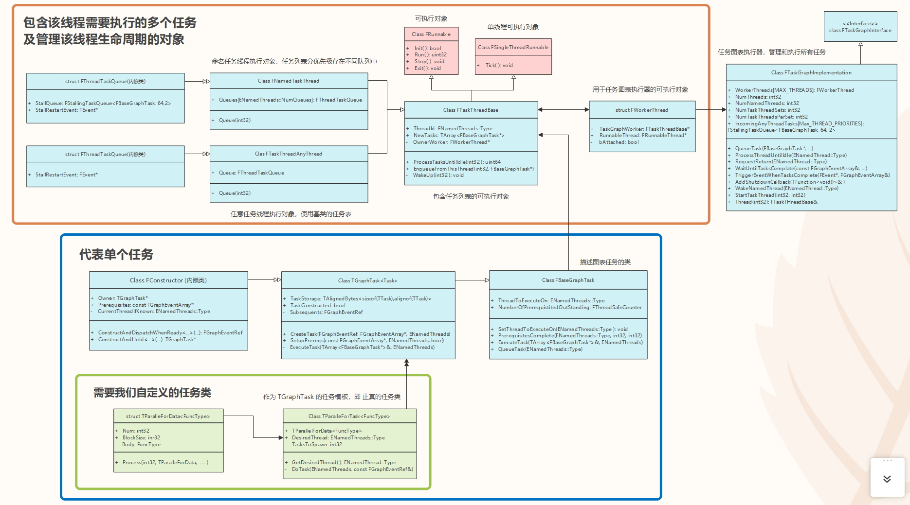

# Unreal 异步与并行编程
简介：** 异步和并行编程可以在游戏运行遇到较为繁重的任务时 (如：GC)，将其分解或异步处理，从而使游戏保持良好的帧率。**Unreal 的底层语言是 C++，UE4 和 C++ 提供的异步和并行编程的接口也大体相同。但 UE4 提供的功能更多，要求程序员掌握 / 实现的函数也更多一些。** 本篇将以 C++ / UE4 对比的方式，介绍与异步和并行编程相关的类与函数，并分析这些函数在 UE4 中的底层实现机制。** 本篇解析的结构包括："TPromise<T>" , "TFuture<T>" , "FPlatformAtomics" , "FRunableThread" , "FAsyncTask" , "FTaskGraph" , "ParallelFor", "FCriticalSection" , "FScopeLock" 等。本篇任务比较繁重 ( 然而写者的脑子做不到并行处理 😦 )，赶紧开始吧～～～
异步处理和对游戏帧率的影响实测参考：
- [UE4] 非同期処理を実装する | historia Inc - 株式会社ヒストリア
# TPromise<T> & std::promise<T>
std::promise<T> 是 C++11 中的模板类，通常与 std::future<T> 一起使用，以保证并行编程时数据获取的正确性。其使用方法如下：
1 | // C++ |
使用方法几乎一致。底层实现代码留到 TFuture<T> 中一起分析
# TFuture<T> & std::future<T>
std::future<T> 表示未来将在其他线程中获取的值。其对象中包含一个布尔变量，记录当前对象是否已获取，使用 future<T> 内的数据时应判断其是否有效。使用方法如下：
1 | // C++ |
以上方法都是不阻塞线程的，不能保证运行后 if 程序体必定执行。可以将此函数添加到 "FutureState" 的回调中确保其执行，也可以在此函数外层阻塞线程，亦或是作为 "TaskGraph" 的前置任务等方式实现。接下来看看， TPromise<T> 与 TFuture<T> 在 UE4 中的底层实现机制，类图如下：

TPromise<T> 和 TFuture<T> 中的 TFutureState* State 实际上指向同一个对象。在 TPromise<T> 调用了 SetValue 后， State 将被赋值，而 State 中的 Complete 原子布尔值也将被设置为 true，此后 State 的值将不再允许被改变， TFuture<T> 也可以获取到 State 中的值，从而实现多线程使用数据的安全。另外， State 可以在 TFuture<T> 中调用 Reset 重置。
# FPlatformAtomics
"FPlatformAtomics" 为平台通用的原子操作函数库，定义了各种对普通变量的原子操作函数。如： InterlockedIncrement , InterlockedExchange 等。其子类分别实现不同平台对应的原子操作函数，以下是 GCC/Clang 对原子操作系统函数的实现。
1 | /** |
熟悉 GCC/Clang 的朋友应该对上面的函数比较了解。 __atomic_fetch_add 实际上就是 GCC/Clang 中加运算符的原子操作函数，而 __ATOMIC_SEQ_CST 表示双向完全屏障的内存模型，与所有线程中的获取加载和释放存储同步。
对于其他平台语言也会由相关的实现，不再展开。
# FRunnableThread & std::thread
std::thread 是 C++11 中使用多线程最原始的线程类。Unreal 中对应实现为 FRunnableThread 类。虽说是复刻，但实际上还是有许多不同的地方。咱先看看使用方法上的区别：
1 | // C++ |
UE4 中创建原始线程远比 C++ 中的麻烦，但其实使用思路都是一样的。首先创建一个线程类 (包含此线程运行所需的数据和函数)，然后启用一个线程运行该线程类中的函数。UE4 中声明线程之所以繁琐，其原因是 UE4 中的异步任务 "FAsyncTask" 实际上也是基于 "FRunableThread" 的，而这些任务都服从 "Framework" 的管理，因此需要额外实现一些用于管理线程的函数，如: Suspend, Kill 等。
以下是 "FRunnable" 与 "FRunnableThread" 底层实现机制的分析。
# FRunnable & FRunableThread
FRunnable 是 "可执行" 对象的接口。可执行对象指可以在任何线程中执行的对象。调用方法模板有 Init() , Run() , Exit() , Stop() . 可执行对象会按照函数语义在合适的时候调用适当的函数。所有初始化在 Init() 中完成，初始化失败将返回错误代码。成功则调用 Run() 以完成此线程的工作。完成后将调用 Exit() 以允许正确的清理。以下是 "FRunnable" 类的代码实现：
1 | // Runnable.h |
FRunnable 将我们线程所需执行的所有函数分类集成起来，提供给 FRunableThread 在管理其生命周期时按需调用。将 FRunnable 独立出来亦可以方便开发时使用。
FRunableThread 是可执行线程的接口，指定用于管理线程生命周期的方法。代码结构如下：
1 | // RunnableThread.h |
从 Unreal 提供给我们的函数中也许你已经发现了使用 FRunnableThread 的方法。
- 调用
FRunnableThread::Create()创建线程，并保留其返回值的引用。 - 调用
WaitForCompletion等待线程执行结束。 - 期间，可以调用
Suspend()暂停 / 继续此线程的执行，也可以调用Kill()杀死线程 - 另外，还可以调用
SetThreadPriority()来设置线程的优先级等。
其中， Create() 函数将调用平台特定的创建线程方法，并调用 SetupCreatedThread() 设置该线程的相关属性和调用 Runnable 的 Init() 方法将其初始化，最后调用 PostCreate() 注册线程调试信息。其他的方法都基于平台 API 而不同，不做展开。
# FAsyncTask & std::async
std::async 是 C++11 创建异步任务的方法，其隐藏了线程创建内部的细节，方便开发者直接获取异步执行的状态和结果。对应于 Unreal 中的 FAsyncTask 类，使用方法如下：
1 | // C++ |
以上程序语义上是完全一样的。如你所见，UE4 的异步任务创建就是如此麻烦。开发者首先需要创建一个任务类，然后调用 FAsyncTask.StartTask() 开始执行。相比 C++ 只需给定异步策略和异步函数即可执行的开发模式，UE4 要做的工作显然更繁琐。不过也得益于此，UE4 中的异步任务的执行也是完全在 Framework 的掌控之下的。有点 "工作量换取灵活性" 的感觉，不过写者更喜欢 UE4 对异步任务封装 的开发模式，因为在异步任务过多或过于复杂时，封装可以使条理更加清晰，可读性更高。
以下是对 "FAsyncTask" (异步任务) 系统底层实现机制的解析：

从类图中可以发现，异步任务是基于线程池任务和线程池的。而线程池任务实际上也是可执行对象。这其实跟 C++ 实现 std::async 的初衷乃至思路都是一样的。 FAsyncTask (异步任务) 的存在免去了开发者与线程直接打交道的麻烦，开发者只需专注于制定任务即可，提高多线程程序开发效率。
接下来理清异步任务从创建到销毁的整个过程，都是怎么与线程池交互的，线程池又是怎么有序地执行异步任务的。
- 首先我们调用
FAsyncTask.Start()将异步任务添加到传入的线程池中 (异步任务也是线程池任务)； - 接着线程池会将看看还有没有空闲线程，如果有，直接将空闲线程中调用
DoWork执行此任务； - 如果没有，则将此任务添加到
QueuedWork数组中，等待有空闲线程时执行。 DoWork()中先给QueuedWork赋值，调用内存屏障 (更新QueuedWork的缓存) 后，激活DoWorkEvent- 激活
DoWorkEvent并不是指FEvent中存着异步任务，实际上是唤醒其关联的线程，让线程执行相关异步任务。 - 异步任务完成后或被意外终止时，将调用
KillThread()关闭DoWorkEvent并将其返回事件池中，最后关闭并销毁线程。
过程大致如此，如果想了解更多细节，请自行翻看源码。
# ParallelFor & std::for_each
std::for_each 是 C++17 中引入的并行处理多任务的函数，对应 UE4 中的 ParallelFor 。其使用方法如下：
1 | // C++ |
"ParallelFor" 函数其实并不只是 C++ 和 UE4 才有，很多其他语言其实也都有对应的实现。 "ParallelFor" 原译为并行遍历，是不依赖线程池 改用任务图表的 另一种并行编程策略，主要用于处理某些逻辑单一但却极为繁重的任务，如: GC 时对每一个 UObject 对象进行可达性分析。我们可以将需要分析的对象按当前空闲线程数平均分堆，然后每个线程负责其中一堆对象的处理。这时候你会发现，其实每个线程执行的任务都是一样的，只是分析的对象不同。"ParallelFor" 尤其擅长处理此类事务。
接下来，让咱看看 UE4 是怎么实现 "ParallelFor" 的 😃
1 | // ParallelFor.h |
如果你是第一次接触 "ParallelFor" 函数，理解上面代码流程可能相对吃力。但没关系，让我们先看看这张类图：

类图框架看起来很是复杂，但其实只是一层层的封装。主要的类及其介绍如下：
FTaskGraphImplementation(任务执行器) 是单例类，是包含管理图表任务的相关函数 (添加任务到任务队列，执行任务，等待任务完成，触发回调等) 的控制类。FWorkerThread(工作线程类)，只是对多个FRunnable(可执行对象) 和FRunnableThread(管理可执行对象生命周期的类) 的简单封装。FTaskThreadBase(任务线程类)，包含此线程需要执行的任务列表及 管理执行此线程中的任务的相关函数FBaseGraphTask(图表任务类)，封装执行单个任务所需的相关数据和函数TParallelForTask<FuncType>(并行遍历任务类)，此类作为TGraghTask<Task>的模板类，负责保存执行 "ParallelFor" 函数所需的相关数据。FGenericTask(通常任务类)，原码中对任务模板类的举例。不使用ParallelFor但想用任务图表系统时，我们需要自定义的任务类。其中包含GetDesiredThread，DoTask等必须定义的函数接口。(具体可以查看：Engine/Source/Runtime/Core/Public/Async/TaskGraphInterfaces.h 下，第 734 行代码)
好的，让咱回到 ParallelFor 函数执行过程的分析 (包含了任务图表系统的整个添加执行销毁流程)
- 执行
ParallelFor时，我们需要传入任务总数 (Num)，和任务函数 (函数类型为 < void (int32>)，后续执行任务函数时将从 0 到 Num 依次做为参数运行任务函数 (在不同线程中)。 - 判断是否可用多线程，不可用则直接单线程遍历执行后返回。如果可用则构造并行遍历数据 (
TParallelForData<FuncType>)，并用其创建并行图表任务 (TGraphTask<TParallelForTask<FuncType>>)，并将此任务状态设为 "Ready"- 创建任务将调用
TGraphTask<...>::CreateTask，创建并返回任务构造器 (FConstructor) - 任务构造器的创建，将设置此任务的前置任务及其拥有者等信息。
- 最后调用任务构造器的
ConstructAndDispatchWhenReady函数，构成此任务到对应线程中，并将其状态设为 "Ready"- 调用
TParallelForTask的构造函数，并初始化其前置任务，设置此任务的执行线程 - 调用
TGraphTask的PrerequisitesComplete函数，将此任务添加到对应线程的任务执行列表中 (调用TGraphTask::QueueTask)- 获取任务执行器单例，调用其
QueueTask函数 - 如果此任务可以在任意线程运行，将其添加到 "任务执行器的任意线程任务的对应优先级队列" (
FTaskGraphImplementation::IncomingAnyThreadTasks[Prority]) 中，开启该任务线程执行此任务 (调用WakeUp)。否则将其运行线程设置为游戏线程 - 最后调用
FTaskThreadBase::EnqueueFromThread将此任务添加到 "对应线程执行对象的任务列表" 中 (FNameTaskThread子类将添加到专用优先级任务列表中)
- 获取任务执行器单例，调用其
- 调用
- 创建任务将调用
- 线程
WakeUp后依次执行任务，ParallelFor中的任务是添加到任意线程队列中的。所以将调用空闲线程的ProcessTasksUntilQuit函数，进而调用ProcessTasks处理任务直至所有任务完成。 ProcessTasks函数则直接死循环调用所有任务 (TGraphTask) 的Execute函数，直至全部完成Execute函数将调用TParallelForTask::DoTask函数，让此线程开始处理任务函数。与此同时，其他线程也将被 WakeUp，来处理此任务函数。并行处理任务函数，其函数参数将通过原子操作增加，以保证线程安全。当参数大于传入 Num 时，完成此次ParallelFor调用- 另外
Execute函数在调用完DoTask后将销毁自身，同时销毁其包含的 Task 任务。
到此， "ParallelFor" 函数的执行流程 与 "TaskGraph" 并行编程的架构 已经完全分析完了。如果读者没有完全理解，建议依照类图翻翻源码，自己走一遍任务创建执行到销毁的整个流程就懂了 😃
参考：
- C++ 標準の promise /future/thread に対応する UE4 標準の TPromise / TFuture / FRunnableThread の使い方 - C++ ときどき ごはん、わりとてぃーぶれいく☆
- future - cpprefjp C++ 日本語リファレンス
- thread - cpprefjp C++ 日本語リファレンス
- Using AsyncTasks - Epic Wiki
# FCriticalSection & std::mutex
并行编程自然少不了临界区的数据访问。相对于 C++11 中的 std::mutex ，虚幻中使用则是 FCriticalSection ，先看看用法上的区别吧～～～
1 | // C++ |
这就是所谓的 "基因遗传" 吗？(实在是太像了...)。另外，UE4 同时还支持 std 版的 lock_guard , adopt_lock , unique_lock 等。如无特殊情况，在 UE4/C++ 中使用 std 版也是完全没有问题的。
# FRWLock & std::shared_mutex
std::shared_mutex 是 C++17 中支持的读写锁，对应到 UE4 是 FRWLock 类。即 多线程可同时对同一对象上读锁，而写锁则需单独占有此临界区资源。使用方法如下：
1 | // C++17 |
锁的行为根据平台不同而不同，不过原理都是差不多的。咱就不做咱开了。
参考：
- shared_mutex - cpprefjp C++ 日本語リファレンス
- shared_timed_mutex - cpprefjp C++ 日本語リファレンス
- shared_lock - cpprefjp C++ 日本語リファレンス
- lock_guard - cpprefjp C++ 日本語リファレンス
- C17, C14, C++11 に併せた std::shared_mutex, std::shared_timed_mutex, std::mutex から mutex_type, read_lock_type, write_lock_type を扱う例 - Qiita
- https://github.com/EpicGames/UnrealEngine/blob/4.18/Engine/Source/Runtime/Core/Public/Windows/WindowsCriticalSection.h#L114
# 总结与结语：
本篇从 C++ / UE4 关于异步的 API 使用方法入手，介绍了 UE4 与 C++ 对于并行程序编程之间的异同。对于每种创建多线程的方法，我们也都分析了其在 UE4 中的底层实现机制 (如：线程池，任务图表等)。最后还对比了 C++ 与 UE4 中对于锁的支持，及其使用方式的差异。希望对你有所帮助～～～
虽然并行编程对于客户端开发来说接触得可能不是很多，但个人觉得很有学习的必要。毕竟游戏运行是非常消耗硬件性能的，如果我们可以在适当的地方引入并行处理方法进行优化。将复杂的任务分配给多个线程执行，如此提高程序对于复杂任务的处理能力的同时，还可以让游戏保持一个不错的帧率，保证良好的游戏体验 (掉帧可就太难受了啊...)
最后预祝读者们元旦快乐 😃